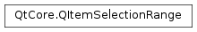

QItemSelectionRange¶
Synopsis¶
Functions¶
- def
__eq__(other) - def
__lt__(other) - def
__ne__(other) - def
bottom() - def
bottomRight() - def
contains(index) - def
contains(row, column, parentIndex) - def
height() - def
indexes() - def
intersected(other) - def
intersects(other) - def
isEmpty() - def
isValid() - def
left() - def
model() - def
parent() - def
right() - def
swap(other) - def
top() - def
topLeft() - def
width()
Detailed Description¶
The
PySide2.QtCore.QItemSelectionRangeclass manages information about a range of selected items in a model.A
PySide2.QtCore.QItemSelectionRangecontains information about a range of selected items in a model. A range of items is a contiguous array of model items, extending to cover a number of adjacent rows and columns with a common parent item; this can be visualized as a two-dimensional block of cells in a table. A selection range has aPySide2.QtCore.QItemSelectionRange.top(),PySide2.QtCore.QItemSelectionRange.left()aPySide2.QtCore.QItemSelectionRange.bottom(),PySide2.QtCore.QItemSelectionRange.right()and aPySide2.QtCore.QItemSelectionRange.parent().The
PySide2.QtCore.QItemSelectionRangeclass is one of the Model/View Classes and is part of Qt’s model/view framework .The model items contained in the selection range can be obtained using the
PySide2.QtCore.QItemSelectionRange.indexes()function. UseQItemSelectionModel.selectedIndexes()to get a list of all selected items for a view.You can determine whether a given model item lies within a particular range by using the
PySide2.QtCore.QItemSelectionRange.contains()function. Ranges can also be compared using the overloaded operators for equality and inequality, and thePySide2.QtCore.QItemSelectionRange.intersects()function allows you to determine whether two ranges overlap.
-
class
PySide2.QtCore.QItemSelectionRange¶ -
class
PySide2.QtCore.QItemSelectionRange(other) -
class
PySide2.QtCore.QItemSelectionRange(index) -
class
PySide2.QtCore.QItemSelectionRange(topL, bottomR) Parameters: - bottomR –
PySide2.QtCore.QModelIndex - index –
PySide2.QtCore.QModelIndex - other –
PySide2.QtCore.QItemSelectionRange - topL –
PySide2.QtCore.QModelIndex
Constructs an empty selection range.
Copy constructor. Constructs a new selection range with the same contents as the
otherrange given.Constructs a new selection range containing only the model item specified by the model index
index.Constructs a new selection range containing only the index specified by the
topLeftand the indexbottomRight.- bottomR –
-
PySide2.QtCore.QItemSelectionRange.bottom()¶ Return type: PySide2.QtCore.intReturns the row index corresponding to the lowermost selected row in the selection range.
-
PySide2.QtCore.QItemSelectionRange.bottomRight()¶ Return type: PySide2.QtCore.QPersistentModelIndexReturns the index for the item located at the bottom-right corner of the selection range.
-
PySide2.QtCore.QItemSelectionRange.contains(row, column, parentIndex)¶ Parameters: - row –
PySide2.QtCore.int - column –
PySide2.QtCore.int - parentIndex –
PySide2.QtCore.QModelIndex
Return type: PySide2.QtCore.boolThis is an overloaded function.
Returns
trueif the model item specified by (row,column) and withparentIndexas the parent item lies within the range of selected items; otherwise returnsfalse.- row –
-
PySide2.QtCore.QItemSelectionRange.contains(index) Parameters: index – PySide2.QtCore.QModelIndexReturn type: PySide2.QtCore.boolReturns
trueif the model item specified by theindexlies within the range of selected items; otherwise returnsfalse.
-
PySide2.QtCore.QItemSelectionRange.height()¶ Return type: PySide2.QtCore.intReturns the number of selected rows in the selection range.
-
PySide2.QtCore.QItemSelectionRange.indexes()¶ Return type: PySide2.QtCore.QModelIndexListReturns the list of model index items stored in the selection.
-
PySide2.QtCore.QItemSelectionRange.intersected(other)¶ Parameters: other – PySide2.QtCore.QItemSelectionRangeReturn type: PySide2.QtCore.QItemSelectionRangeReturns a new selection range containing only the items that are found in both the selection range and the
otherselection range.
-
PySide2.QtCore.QItemSelectionRange.intersects(other)¶ Parameters: other – PySide2.QtCore.QItemSelectionRangeReturn type: PySide2.QtCore.boolReturns
trueif this selection range intersects (overlaps with) theotherrange given; otherwise returnsfalse.
-
PySide2.QtCore.QItemSelectionRange.isEmpty()¶ Return type: PySide2.QtCore.boolReturns
trueif the selection range contains no selectable item
-
PySide2.QtCore.QItemSelectionRange.isValid()¶ Return type: PySide2.QtCore.boolReturns
trueif the selection range is valid; otherwise returnsfalse.
-
PySide2.QtCore.QItemSelectionRange.left()¶ Return type: PySide2.QtCore.intReturns the column index corresponding to the leftmost selected column in the selection range.
-
PySide2.QtCore.QItemSelectionRange.model()¶ Return type: PySide2.QtCore.QAbstractItemModelReturns the model that the items in the selection range belong to.
-
PySide2.QtCore.QItemSelectionRange.__ne__(other)¶ Parameters: other – PySide2.QtCore.QItemSelectionRangeReturn type: PySide2.QtCore.boolReturns
trueif the selection range differs from theotherrange given; otherwise returnsfalse.
-
PySide2.QtCore.QItemSelectionRange.__lt__(other)¶ Parameters: other – PySide2.QtCore.QItemSelectionRangeReturn type: PySide2.QtCore.boolReturns
trueif the selection range is less than theotherrange given; otherwise returnsfalse.The less than calculation is not directly useful to developers - the way that ranges with different parents compare is not defined. This operator only exists so that the class can be used with
QMap.
-
PySide2.QtCore.QItemSelectionRange.__eq__(other)¶ Parameters: other – PySide2.QtCore.QItemSelectionRangeReturn type: PySide2.QtCore.boolReturns
trueif the selection range is exactly the same as theotherrange given; otherwise returnsfalse.
-
PySide2.QtCore.QItemSelectionRange.parent()¶ Return type: PySide2.QtCore.QModelIndexReturns the parent model item index of the items in the selection range.
-
PySide2.QtCore.QItemSelectionRange.right()¶ Return type: PySide2.QtCore.intReturns the column index corresponding to the rightmost selected column in the selection range.
-
PySide2.QtCore.QItemSelectionRange.swap(other)¶ Parameters: other – PySide2.QtCore.QItemSelectionRangeSwaps this selection range’s contents with
other. This function is very fast and never fails.
-
PySide2.QtCore.QItemSelectionRange.top()¶ Return type: PySide2.QtCore.intReturns the row index corresponding to the uppermost selected row in the selection range.
-
PySide2.QtCore.QItemSelectionRange.topLeft()¶ Return type: PySide2.QtCore.QPersistentModelIndexReturns the index for the item located at the top-left corner of the selection range.
-
PySide2.QtCore.QItemSelectionRange.width()¶ Return type: PySide2.QtCore.intReturns the number of selected columns in the selection range.
© 2018 The Qt Company Ltd. Documentation contributions included herein are the copyrights of their respective owners. The documentation provided herein is licensed under the terms of the GNU Free Documentation License version 1.3 as published by the Free Software Foundation. Qt and respective logos are trademarks of The Qt Company Ltd. in Finland and/or other countries worldwide. All other trademarks are property of their respective owners.